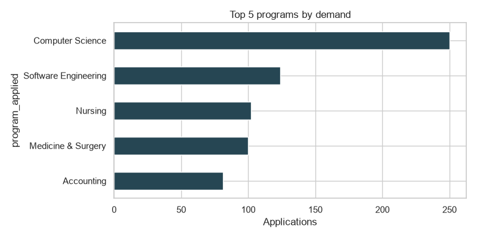
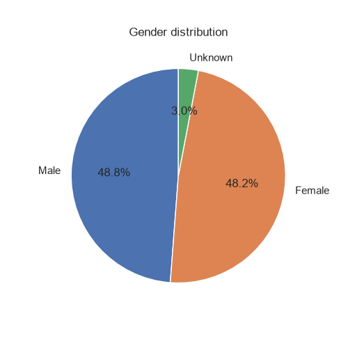
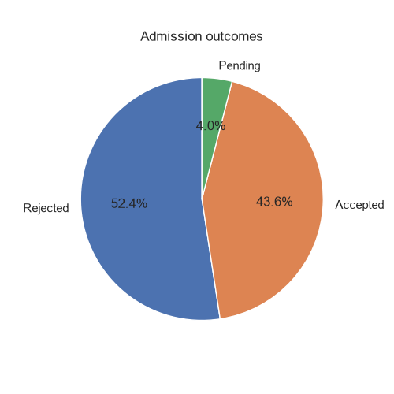
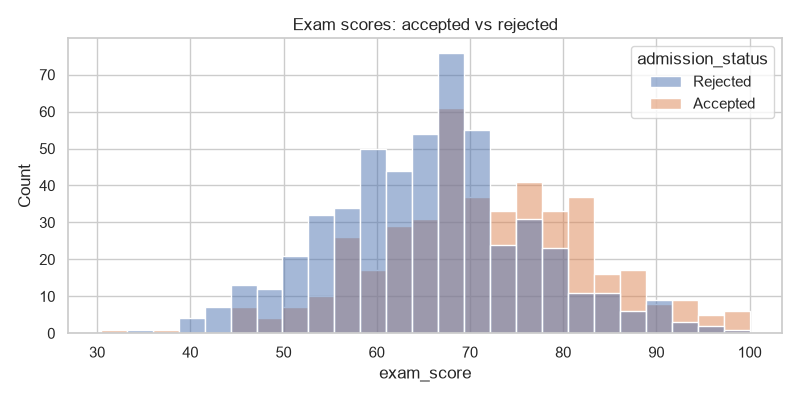
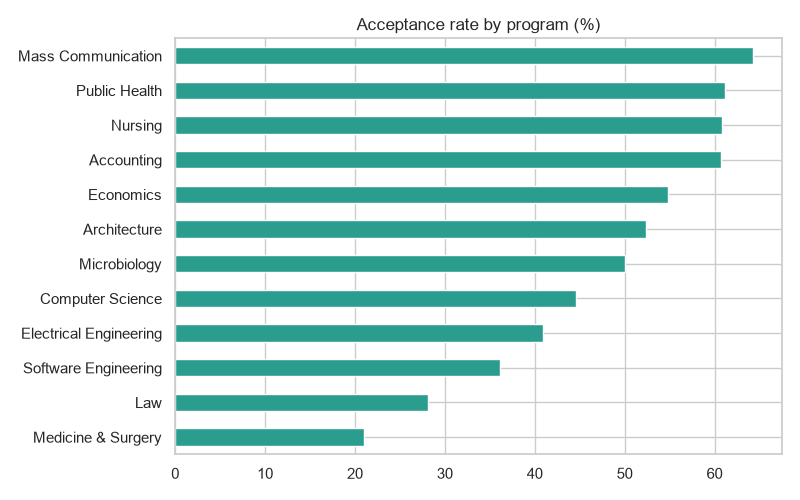

Out of 1000 total applications, 40 remain pending, resulting in an overall acceptance rate of 45.4%. The applicant pool is evenly divided between males at 48.8% and females at 48.2% (with 3.0% unknown), though females experienced a higher acceptance rate of 47.5% compared to 44.7% for males and 22.2% for unknown. Application volume was led by Computer Science (250), Software Engineering (124), Nursing (102), Medicine & Surgery (100), and Accounting (81). Across specific programs, acceptance rates ranged from a high of 64.3% in Mass Communication to a low of 21.1% in Medicine & Surgery.
| metric | value |
|---|---|
| total_applicants | 1000.0 |
| pending | 40.0 |
| acceptance_rate_pct | 45.4 |
| program | applications |
|---|---|
| Computer Science | 250 |
| Software Engineering | 124 |
| Nursing | 102 |
| Medicine & Surgery | 100 |
| Accounting | 81 |




